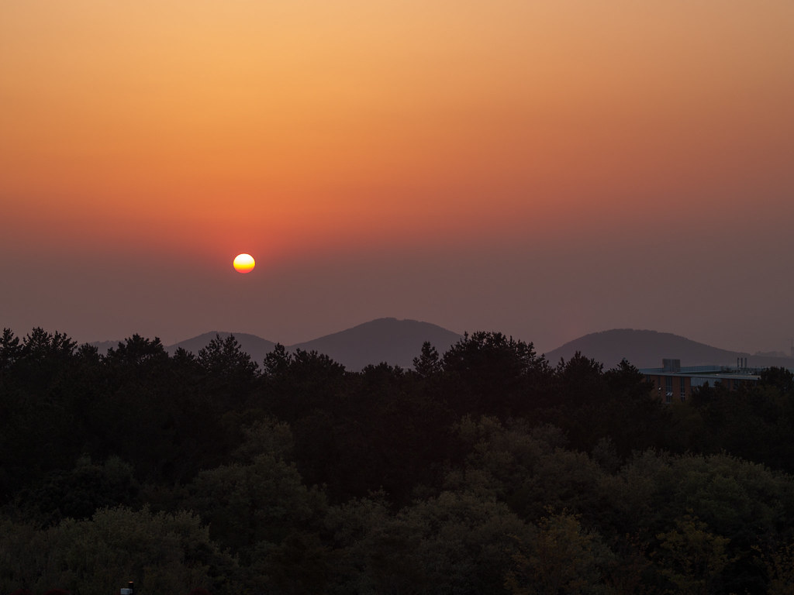

새별오름 曉星岳


왜 여기인가
제주 서부의 대표 오름. 완만한 잔디 능선을 따라 오르면 사발 모양 분화구가 나타나고, 북쪽으로는 애월 바다가 내려다보입니다. 봄철 유채꽃이 지는 초원 풍경이 장관이며, 서쪽 하늘을 등지고 앉기 좋아 일몰 명소로도 유명합니다.
이런 분께 추천
- 오름 첫 방문자 — 넓은 주차장, 완만한 경사, 짧은 거리로 실패 확률 제로
- 일몰 헌터 — 서쪽 바다를 바라보며 노을 감상 가능한 입지
- 가족 단위 — 아이·어르신과 함께 걷기 좋은 탐방로
거문오름 拒文岳


왜 여기인가
UNESCO 세계자연유산 '제주 화산섬과 용암동굴계'의 핵심 구역. 검은 숲이 우거져 '거문(검은)+오름'이라는 이름이 붙었습니다. 사철 푸른 사스래나무·유희나무 숲길을 지나면 눈부신 초원 능선이 펼쳐지고, 정상에서는 제주 동부 평야와 바다가 한눈에 들어옵니다.
이런 분께 추천
- 세계자연유산 오름 — 예약제로 관리되는 잘 정돈된 탐방로
- 숲길 좋아하는 분 — 여름에도 시원한 숲 그늘 산책
- 가을 단풍 — 10월 말~11월 초 유희나무 단풍이 절경
어승생악 御乘生岳


왜 여기인가
한라산 서남록 옆의 측화산. 1100도로 변에 있어 접근성이 매우 좋고, 정상 능선에서 바라보는 한라산 남벽과 유희나무 군락 숲길이 일품입니다. 해발 1168m로 여름에도 선선하며, 늦은 봄 진달래가 능선을 물들입니다.
이런 분께 추천
- 한라산 정상 등반 없이 한라산을 가장 가까이서 보는 코스
- 중산간 드라이브 중 잠깐 들르기 좋은 위치 (1100도로변)
- 사진 작가 — 구름 많은 날 운해 속 한라산 명당
다랑쉬오름(월랑봉) 月郞岳


왜 여기인가
'오름의 여왕'이라 불리는 우아한 원뿔형 오름. 한자명이 月郞岳(월랑악)이라 월랑봉이라고도 불립니다. 분화구가 완벽한 원형이고, 정상에서 송당리 일대와 아끼·문돗·영주오름 등 인근 오름들이 조망됩니다.
이런 분께 추천
- 오름 형태의 정점 — 교과서적 원뿔 분화구를 볼 수 있는 곳
- 동부 여행 코스 — 송당리 카페거리·다른 오름과 연계
- 드라이브 중 잠깐 올랐다 내려오기 좋은 규모감
성산일출봉 城山日出峰


왜 여기인가
10만 년 전 수중화산 분화로 만들어진 제주의 상징. 정상 분화구(약 13만 m²)에 오르는 계단 코스는 짧지만 평평한 분화구 바닥과 성산포구 바다 뷰가 압도적입니다. 대한민국 대표 일출 명소입니다.
이런 분께 추천
- 첫 제주 여행 — 안 가면 아쉬운 제주 No.1 랜드마크
- 일출 애호가 — 새벽 등반으로 시작하는 하루
- 동부 코스 — 성산포구·우도 선착장과 도보 연계
용눈이오름 龍眼岳

왜 여기인가
구좌읍 종달리 해안에 자리한 오름. '용의 눈'이라는 이름처럼 정상부에 둥근 분화구가 있으며, 북쪽으로 조천·종달리 해안선과 바다가 파노라마로 펼쳐집니다. 비고 88m로 매우 낮아 아이들과도 부담 없습니다.
이런 분께 추천
- 동부 해안 드라이브 중 잠깐 올라가 바다 조망하고 싶을 때
- 아이 동반 — 짧고 완만, 성공 경험 쌓기 좋음
- 노을 사진 — 서쪽 하늘 + 오름 실루엣 조합
아부오름 前岳


왜 여기인가
제주에서 화구가 매우 큰 오름 중 하나. 화구 내부에 나무가 자라는 것이 특징이며, 능선에 서면 송당리 마을과 동부 초원지대가 시원하게 내려다보입니다. 다랑쉬오름과 함께 송당리 오름 코스로 묶기 좋습니다.
이런 분께 추천
- 거대 화구 경험 — 분화구 내부까지 내려가 볼 수 있는 흔치 않은 오름
- 송당리 코스 — 다랑쉬+아부+영주오름 트레킹
- 조용한 곳 — 관광객 붐비는 곳 피하고 싶을 때
금오름 金岳


왜 여기인가
조천읍의 대표 탐방 오름. 초입의 숲길을 지나면 시원하게 트인 초원 능선이 이어지며, 정상에서 조천 바다와 함덕 해수욕장 방면까지 조망됩니다. 거문오름과 함께 동북부 오름 코스로 묶기 좋습니다.
이런 분께 추천
- 초원 걷기 팬 — 새별오름과 같은 계열의 잔디 능선
- 동북부 숙박 — 조천·함덕에서 10분 거리
- 바람 쐬며 산책 — 낮고 완만해 부담 없음
한눈에 비교하기
| 오름 | 위치 | 해발 | 정상 소요 |
|---|---|---|---|
| 새별오름 | 애월 (서부) | 150m | 15~20분 |
| 거문오름 | 조천 (동부) | 456m | 40~50분 |
| 어승생악 | 1100도로 (중산간) | 1168m | 30~40분 |
| 다랑쉬(월랑) | 송당리 (동부) | 382m | 30~40분 |
| 성산일출봉 | 성산 (동부) | 182m | 20~30분 |
| 용눈이오름 | 종달리 (동부) | 248m | 15~20분 |
| 아부오름 | 송당리 (동부) | 301m | 30분 |
| 금오름 | 조천 (동부) | 332m | 25~35분 |